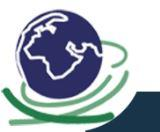
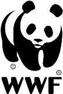
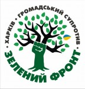

The role of nature in human life
We are young gamedev studio with big fiendly community. We make RPG, adventure and quest games.
Our biggest achivment is winning Game of the Year nomination in the Game Awards 2019.
Nature in human life plays both material and spiritual significance. Material, because nature itself gives us food, shelter, clothing. And it would seem that this idea is very simple, therefore, observing this view, a person should be grateful to nature. If there is no such feeling, then at least you must understand such a simple thing: without looking after, not fertilizing the field, there is nothing to hope that next year you will have bread on the table.
The spiritual significance of nature in human life, in my opinion, began to be lost a long time ago when a person began to pay more attention to himself, to his inner world, and not to his relationship with the outside world. Once the Diabos, or pagans, did not separate themselves from nature, they lived in it and with it. And the character of the behavior, and even the clothes were harmonious with nature. Now, the more challenges we make, for example, in clothes, the more we stick to a particular fashion, rather than a harmonious combination of comfortable and aesthetic, the more we separate from nature. Nature does not become a mother, who she was for our ancestors. And we, like those unclean, are behaving indecently and hatefully. Tolerance of nature is not boundless. She will test and send us terrible warnings, such as the Chernobyl tragedy - one of these warnings. But still, I believe in the spiritual rebirth of man, because it comes to this world of sinless little ones. It is only necessary to remind people that they are children of nature, a small part of it.
Volunteers

Global Nest
Global Nest is an international association of scientists, technologists, engineers and other interested groups involved in all scientific and technological aspects of the environment, as well as in the application of methods for sustainable development. The main objective of the organization is to support and promote the dissemination of information on the most advanced methods for improving the quality of life based on the development and application of environmentally friendly technologies and policies.
World Society for the Protection of Animals
The World Society for the Protection of Animals (WOPA) is an international nonprofit animal protection organization operating in more than 150 countries around the world and uniting more than 900 organizations. At WHO 13 offices located in Australia, Brazil, Canada, Colombia, Costa Rica, Denmark, Germany, the Netherlands, New Zealand, Tanzania, Thailand, the United States and the United Kingdom, the head office of WHO is in London.

World Nature Fund
World Wide Fund for Nature, until 1986 - The World Wildlife Fund (WWF) is an international non-governmental organization dedicated to nature conservation, research and the restoration of the natural environment. The official name of the organization has been changed from the World Wildlife Fund to the World Wide Fund for Nature, but the previous name remains official in many countries.

Green Front
"Green Front" - Kharkiv regional public organization of ecological direction, which deals with environmental protection, protection of environmental and related social rights of citizens.Green Front is a social movement that sprang up spontaneously in Kharkiv on May 20th 2010, when the unlawful felling of the trees commenced in the Gorky Park. At first there were only two people who protested, then seven, later they became twenty. By the time of the butchery in the park on the early morning of June 2th 2010, when the encampment of proesters was demolished and when trees were sawn down right along with the activists on their top, about 200 tree defenders were present in the encampment simultaneously.